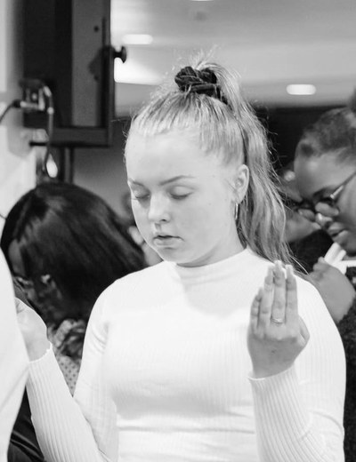
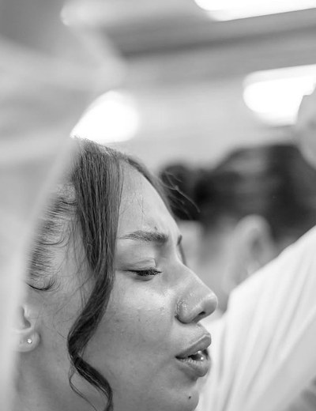
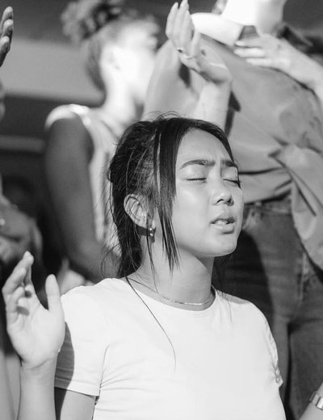
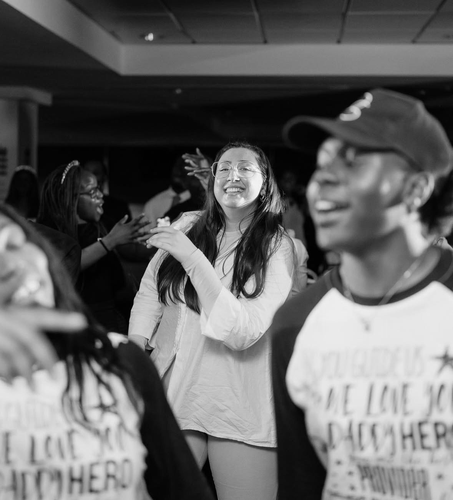
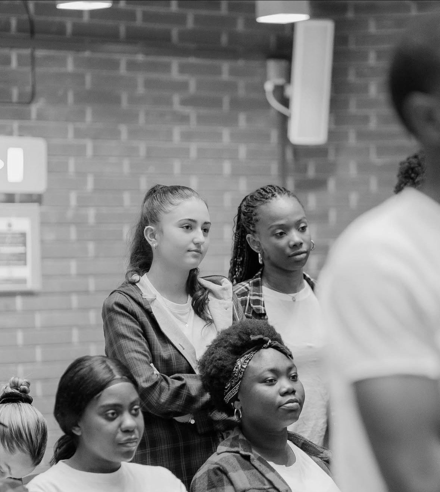
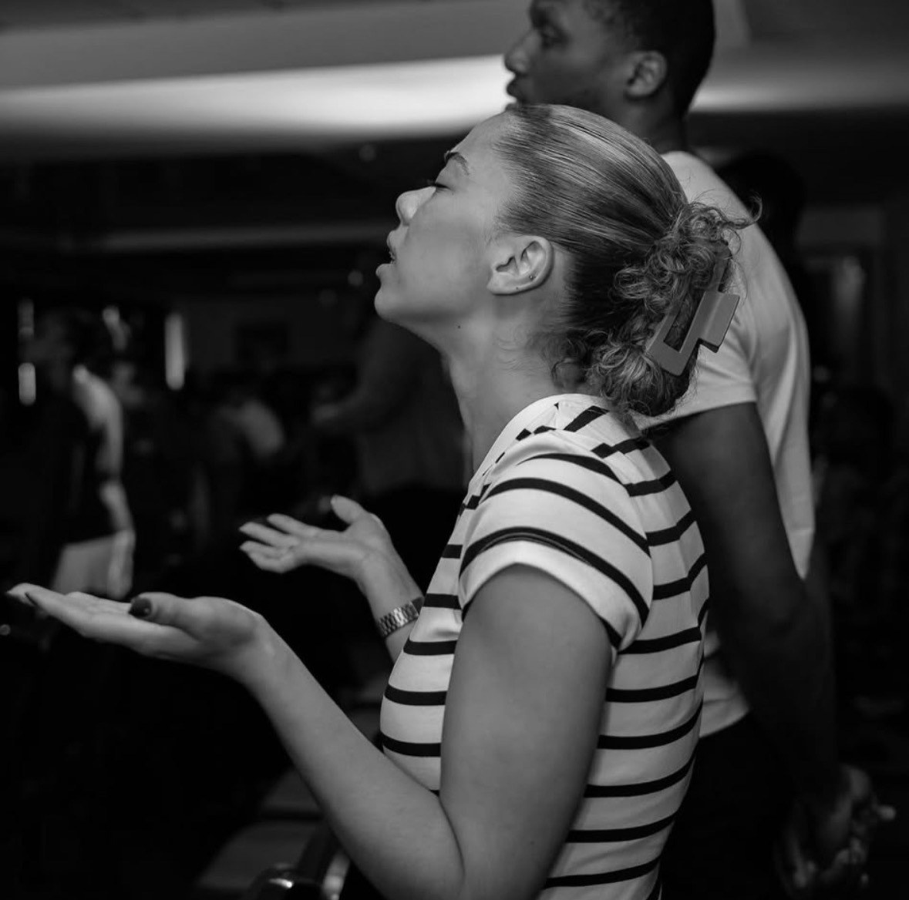

Churchon Campus
First Love Church is a church of students and graduates at George Mason, bringing students and graduates to know God. Every week we meet on campus to worship, to hear the Word of God and to pray for one another; then we go back to our classes, our halls and our friends, and we tell people about Jesus.
Known by name.



Christian
Jessica
Zach
Wenwu
Everybody is important here.
You are not just a number. Here you will be known by name and cared for: someone learns your name, prays for you, and walks with you as you come to know God.

01 // Let us know you're coming
Your seat is saved.
02 // When
Next up: Bible Study, Sunday, 1:00 PM, Lecture Hall Building, Room 2. Every gathering
03 // What people ask first

04 // Getting there
How far is The Hub from where you are?
0minutes on foot
Real paths, real buildings. Map data © OpenStreetMap contributors
Prayer
Do you want to be prayed for?
Write your name, and your number if you'd like, and we will pray for you. It comes to the church privately; nothing is ever shown on this site.

Contact
Write to the church.
A real person reads every message.
- Instagram@firstlovegmuOpen
- Find usThe Hub, George Mason University, Fairfax, VirginiaDirections
- EventsEvery event and RSVP lives on Mason 360Calendar